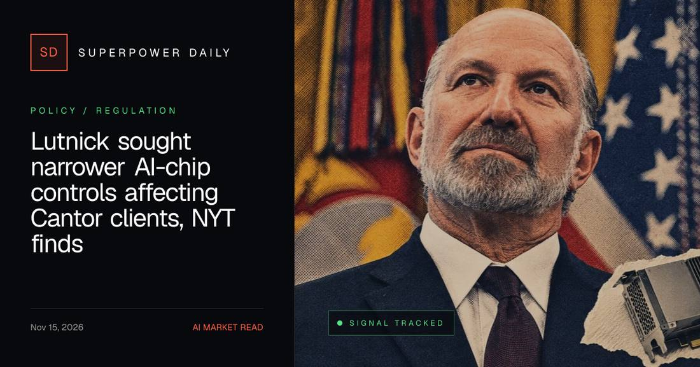

Lutnick Pushed Narrower AI Chip Rules as Family Firm Worked With Affected Data Centers, NYT Finds
Commerce Secretary Howard Lutnick has pushed for narrower US controls on overseas access to advanced AI chips, a New York Times investigation published November 15 found, while his family's firm Cantor Fitzgerald did business with data-center companies that could be affected. The Times found no evidence the firm's dealings influenced his decisions; the proposed rule would cover seven countries and future shipments only.

- 01THE LOOPHOLE — Direct sales of leading Nvidia chips to China are barred, but Chinese companies can legally rent computing capacity at overseas data centers. The Biden administration issued global restrictions on remote access in its final weeks; President Trump revoked them, arguing they impeded American business and innovation.
- 02THE PROPOSAL — Commerce, under Lutnick, pushes a scaled-back replacement: seven countries, future shipments only, existing facilities exempt, notification rather than an automatic license when Chinese customers train AI models, and a higher computing-power threshold before the rules apply. Other officials favor worldwide coverage.
- 03THE OVERLAP — The New York Times investigation published November 15 documents Cantor Fitzgerald's ties to Bitdeer and Gorilla Technology, while finding no evidence the dealings influenced Lutnick. Commerce says he complied with ethics agreements; Lutnick transferred Cantor ownership to his family in October 2025. Axios reported Lutnick repeatedly delayed restriction efforts, and Bessent has criticized Commerce's failure to blacklist Megaspeed.
WHAT HAPPENEDWhat Happened
Commerce Secretary Howard Lutnick has pushed for narrower US controls on overseas access to advanced AI chips, a New York Times investigation published November 15 found, while his family's financial firm, Cantor Fitzgerald, did business with data-center companies that could be affected by the rules. The Times found no evidence that Cantor's business relationships influenced Lutnick's deliberations, and the Commerce Department says he has complied with all ethics agreements.
The dispute turns on renting computing power rather than buying hardware. Direct sales of leading Nvidia chips to China are barred, but Chinese companies can legally rent access to those processors at data centers in countries such as Malaysia, Indonesia and Thailand. The Biden administration issued global restrictions on remote access in its final weeks; President Trump revoked them, and the replacement rules have been under debate since.
Commerce has pushed for a scaled-back replacement, according to people familiar with the discussions cited by the Times. It would cover seven countries, Singapore, Malaysia, Thailand, Indonesia, Brazil, South Africa and Norway, apply only to future chip shipments, exempt data centers already equipped with American technology, and require companies to notify the government when Chinese customers use their facilities to train AI models, without automatically needing a license. Other administration officials have sought worldwide coverage instead.
WHY IT MATTERSThe overlap is documented; influence is not
One affected business is Bitdeer, the Singaporean company developing Malaysia's A201 data center, expected to open in 2027 with hundreds of millions of dollars in advanced Nvidia servers and intended to supply computing power to a Chinese technology company, likely Tencent according to a person familiar with the arrangement, though that identification is not confirmed. Cantor served as a designated sales agent for Bitdeer's stock offering of up to $1 billion this year, a relationship dating to at least 2024, when Cantor helped arrange an offering of up to $250 million. Cantor also previously provided financial services to Gorilla Technology, which is building data centers in Thailand and Indonesia.
Lutnick transferred his remaining Cantor ownership to his family in October 2025, and his sons now run the firm. The Times described Cantor's data-center dealings as a small portion of its business and noted other investment banks have similar relationships. The investigation documents an overlap between the rules Lutnick is writing and his family's clients, while explicitly finding no evidence the dealings shaped his decisions.
WHAT TO WATCHA seven-country rule leaves the rental loophole open almost everywhere else
The substantive policy news is the scope of the proposal. A rule covering seven countries and future shipments only, with notification instead of licensing, would leave Chinese customers free to rent computing power from data centers outside those countries, as a Council on Foreign Relations senior fellow told the Times: "If you're only restricting remote access to data centers in certain countries, then China will just rent from the data centers outside those countries."
Axios reported that Lutnick repeatedly delayed efforts to restrict companies suspected of diverting Nvidia chips to China, even after Trump authorized tougher enforcement, and Treasury Secretary Scott Bessent has publicly criticized Commerce's failure to blacklist Singapore-based Megaspeed. The White House has expressed confidence in Lutnick. The watch items are whether the seven-country proposal becomes a final rule, whether other officials push worldwide coverage, and whether Congress demands stronger enforcement.
SIGNAL JUDGMENT — ANALYSISThe overlap is the story; the seven-country scope is the policy
Tokenta Signal's judgment: the investigation documents an overlap, not influence, and the Times says so explicitly, so the conflict-of-interest charge stops at appearance. What matters for AI policy is the rule itself: seven countries, future shipments only, notification instead of a license. That leaves the remote-access loophole open almost everywhere else, which is why other officials want worldwide coverage. The fight inside the administration over the scope of the rule, not the family business, is what decides whether Chinese customers keep renting American computing power abroad.
WHAT REMAINS UNCERTAINWhat Remains Uncertain
EVIDENCEEvidence
Superpower Daily's summary of the New York Times investigation, read November 15, 2026: Commerce Secretary Howard Lutnick has advocated narrower restrictions on overseas data centers serving Chinese customers while his family's firm worked with potentially affected businesses; the Times found no evidence Cantor's dealings influenced his decisions.
PRIMARY SOURCESPrimary Sources
- Superpower Daily: Lutnick sought narrower AI-chip controls affecting Cantor clients, NYT finds
https://superpowerdaily.com/posts/lutnick-sought-narrower-ai-chip-controls-affecting-cantor-clients-nyt-finds - Newsmax: NYT: Lutnick Eased AI Chip Restrictions While Firm Helped Finance Asian Data Centers
https://www.newsmax.com/newsfront/howard-lutnick-ai-chips/2026/11/15/id/1276360 - TradingView: Lutnick backs narrower AI chip controls as family firm's business draws scrutiny
https://www.tradingview.com/news/seekingalpha:cc12ba5ab094b:0-lutnick-backs-narrower-ai-chip-controls-as-family-firm-s-business-draws-scrutiny/